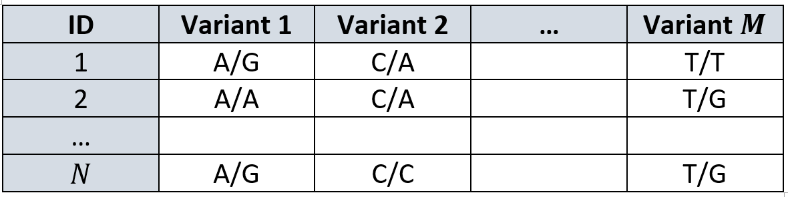
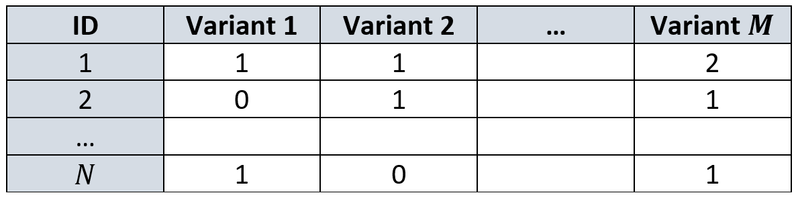
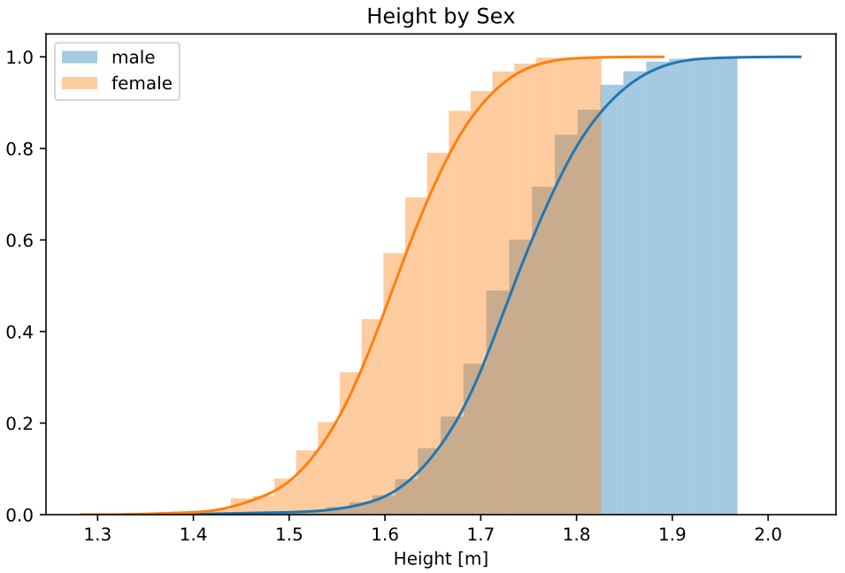
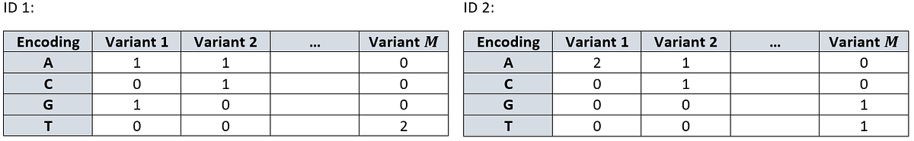
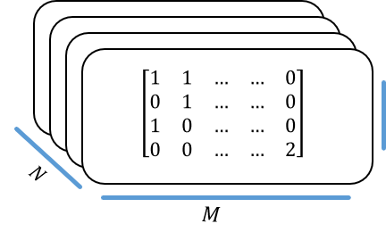
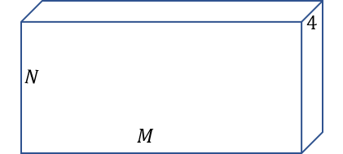
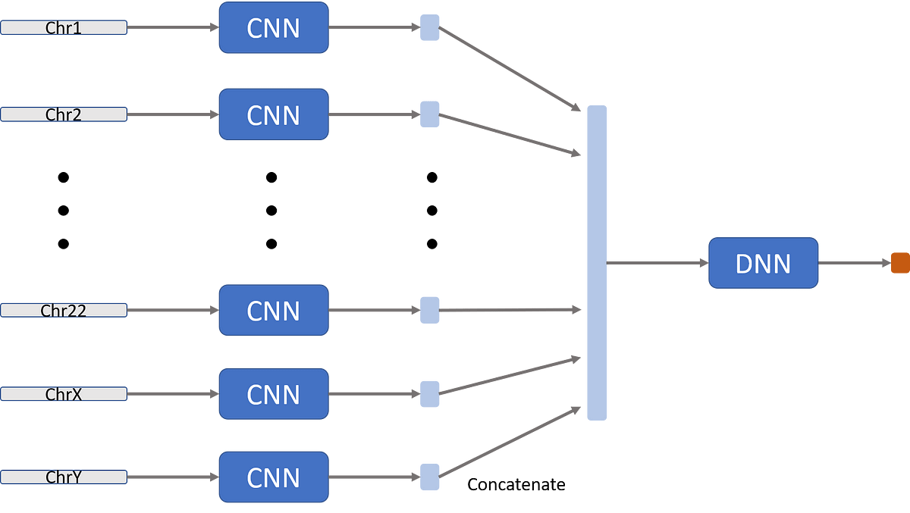

Applying Deep Learning to Genetic Prediction
What classical methods for obtaining polygenic (risk) scores lack, and how deep learning might help mitigated these shortcomings.
Originally published on
Experiments and upper bounds of genetic prediction
An organism can be defined by a set of traits (e.g. we can define a person using her height, IQ, predisposition for osteoporosis, etc.). The value of a given trait can be decomposed into two contributing factors: a genetic and non-genetic one (i.e., environmental). How much genetic factors contribute to the value of a given trait can be measured in a twin study. Basically, taking identical twins (so they share almost identical DNA) and fraternal twins (so they are siblings but under a very similar environment) and comparing them. If the identical twins are more similar than the fraternal ones it means genetic plays a more important role in this trait than environmental.
We can further quantify the contribution of genetic influence. In height, for example, DNA determines ~70% of the contribution. Roughly, that means that if we’ll try to predict one’s height using only her DNA we can be ~70% accurate. That also means that an orphan child adopted and raised by a tribe of basketball players can gain up to 30% more height than it would have if he’d grow up with he’s biological pro-golfers parents.
However, on the computational side, the best method is currently able to predict around 50% (See table 1 from this study). These types of studies predicting traits from DNA are called genome-wide association studies (GWAS). They try to associate the contribution of each allele (i.e. a specific value in a specific location of the genome) to the desired phenotype (say, a physical trait or a risk for some condition).
Formal setting
Feature space
We begin with our feature-space — the DNA.
DNA can be presented as a long linear strand over an alphabet of four characters: {A, C, G, T}.
DNA has two problems preventing it being a good feature space:
It is unreasonably huge. A homo-sapiens has about 3.2 billion base-pairs in a single haplotype, and since each of us has two chromosomes of each kind (thanks, mom and dad!), that means that each individual has 6.4⋅10⁹ features describing them. ImageNet, for comparison has 6.5⋅10⁴ features (not to mention we usually have far less people in a study than we have images, talking about \(p≪n\), right?).
It is not always consistent along different individuals. A small child can have a different length of DNA than her grandparent due to telomere shortening, for example, but the main reason is actually because biology is hyper stochastic.
This is way genomes are first aligned against an agreed representative genome, but that’s more modelling and one should be extra cautious aligning against a reference genome when actually looking for polymorphism.
We overcome these problems physically and not computationally — we don’t use the entire genome of an individual, but rather sample \(M\) variants (i.e. genomic locations)from it, where \(M\) is about 250–500k1. This solves (1) by reducing dimensionality (you may think of it as a sort of random projection) and solves (2) by aligning our feature space across individuals.
Now, you may (and should) be a bit upset about this coarse treating of data, thinking “what if we just threw away the specific variant responsible for happiness? Now we never gonna know its effect!”. To which I’ll reply by saying that not all is lost. Variants which lie in close proximity on the DNA strand tend to “stick together” (known as linkage disequilibrium). Even if we don’t have the variant of effect, there’s a high probability we have its neighbor, and since they are conserved together — this neighbor can serve as hatch to the causal one. This is also why it is called an association study — it has no causal guarantees about the variants.
This method is less than perfect and there are other types of studies, such as whole-genome ones, to overcome this obstacle, but for the sake of this field, we stick to the plan as it is reasonable enough2.
Sample
Now that we defined our data measurements, we can go and recruit people to gather data from. We sample \(N\) subjects from some population.
The population of choice (namely, how diverse it is), deserves a post (or several) for itself, but for now we’ll take it for granted.
The data
We can present our data as a matrix \(G\) of \(N \times M\), where each cell contains one out of 16 possible combinations of nucleotides. Each genomic location has two copies (one from each chromosome), so it can have any of the 4 possibilities in each one of the copies, and that amounts to a total of 16 options.
This data matrix is usually captured as follows:

Those of you who are sharp-sighted may notice “well, this is very phonetic, we need to make it numbers and go start predicting!”.
Very well, let us begin our journey.
How is it done today
Data transformation
First thing, we make another assumption: we assume each variant can contain at most two different values. That is, each column in our data matrix \(G\) is restricted to have a maximum of two unique nucleotides. In our example above, variant 1 is restricted only to A or G and variant 2 only to C or A. This is also known as Single Nucleotide Polymorphism (SNP).
Once we’ve restricted ourselves to two values per column, we can calculate their prevalence in that specific variant across the dataset. The nucleotide that is less abundant will be called the minor allele and the one more abundant… wait for it… the major allele, because geneticists tend to focus on rare alleles (rare genetic disease must be caused by rare alleles). Wearing the hat of a geneticist, we’ll continue with our focus on the minor allele.
We denote the frequency of the minor allele in some variant \(j\) as \(p_j\), which we can think of as the probability to get that minor allele in a person. Since we have two chromosomes, we have two trials to try and get it. Therefore, for a given individual \(i\), the number of minor alleles in her variant \(j\) can be modeled as \(g_{ij} \sim Bin(2, p_j)\).
This way, if you have two minor alleles you’d have “high energy” (i.e. a value of 2 instead of 0 or 1). Moreover, the rarer the allele, the more an individual with it will “stand out” from the other individuals in the sample. Remember, geneticists search for these irregular and rare appearances of alleles to explain the presence of irregular and rare traits.
Transforming our \(G\) from above give us the following design matrix:

Prediction methods
Once we defined our data matrix, we would usually regress (either linear or logistic) to obtain a model that describes the relation between these exogenous variables — the number of minor alleles in every variant, and our endogenous variable that is the trait of interest.
To account for these still large number of features, we can apply several tools. I’ll try to name few of the more known strategies I know of, but I’m in no position of making a comprehensive list. I will say, that they all try to find a smaller set of variants that explain the trait. The first method does it implicitly when regularizing the model, but the following two are more straightforward about it.
LASSO explicitly regularizes the parameters being learned by shrinking them towards 0. It assumes each variant has a tiny contribution unless proven otherwise.
P-value cutoff. We can obtain from the regression a significance level for each weight (i.e. each variant). Correcting for multiple-tests aside, we can choose to discard all the variants with high p-value, as we claim they are not of interest to our specific problem (i.e. not unique for predicting our phenotype)3.
LD clumping. We mentioned before that DNA segments tend to “stick together”. This was how we rationalized the use of DNA markers instead of an entire genome. But what if this set of markers is still redundant. Maybe if we’d look at some small window, the signal will be so consistent that we could just pick one representor variant (or a handful) from that window. There can be different tactics for choosing a representor in a given window, we can choose them based on their p-value (it’s like (2) if the “window” would be the entire genome), or by their R² value (i.e. how they correlate in that window). We can use a cutoff, or choose k best, and we’d need to adjust for window size based on how crowded our variants are.
My main takeaway on this, is that since DNA has a structure, the columns in our matrix have high co-linearity, which we should account for (either in penalized regression or in discarding subsets of the columns).
Of course, there are other techniques like using Bayesian statistics and accounting for priors that reduce false positive variants, but overall, these heuristics deliver ok thus far.
Discussion
One big advantage of this strategy is that it is backed up by solid a statistical framework. At least during the modeling. However, this backup might do more harm than good when getting to prediction. Namely, the heuristic preprocessing.
On the other side, I can think of several disadvantages:
Restricting each column to two variants might reduce the variability (or the full expressive range) of the data. It might even paint a non-realistic image of the world with the entire modeling strategy is built on it.
Historically the arrays used for genotyping were designed to be binary (they would omit either red or green light), and it corresponds with the naive research design claiming we’re all the same unless “a lightning stroke” in that genomic location and mutated it to be different. But what if a lightning had struck twice in the same spot? Multiple Nucleotide Polymorphisms (MNP as opposed to SNP) are becoming more prevalent as we move from old genotyping techniques to modern DNA sequencing that is more expressive and can capture a more realistic snapshot of one’s DNA.Sex chromosome cannot be modeled. Since the entire scheme is based on a two-trial binomial distribution, you can’t model males’ sex chromosome. Females have two X chromosomes, making it another diploid chromosome. However, males have one X and one Y that do not fully correspond to one another, so you can’t apply a two-trial binomial test there. [That’s half the population we’re neglecting]. As a result, it is not very common to model sex chromosome, so for my understanding, most of the studies are based mostly on autosomal chromosomes.
How can you account for the difference between males’ and females’ height if you don’t model the genetic differences between males and females.It might not be simple to apply the model in a different study. Since it is a linear model, it has a weight for each variant. But what if another study used slightly different genetic markers? We wouldn’t be able to account for them. Variants in our study would be discarded and we would need to ignore variants in the model that we don’t have. Nothing promises that the sets of markers from different studies would perfectly intersect.
[A common solution is to impute genomes, but that only adds more assumptions and uncertain modeling to the process]

The proposed method
I propose a deep learning scheme to cope with the cons above.
Data transformation
We begin with as function \(O\) that encodes each nucleotide as a one-hot vector (the order is by the English alphabet for consistency):
\[ O(A): \begin{bmatrix}1 \\ 0 \\ 0 \\0\end{bmatrix}, \;\; O(C): \begin{bmatrix}0 \\ 1 \\ 0 \\0\end{bmatrix}, \;\; O(G): \begin{bmatrix}0 \\ 0 \\ 1 \\0\end{bmatrix}, \;\; O(T): \begin{bmatrix}0 \\ 0 \\ 0 \\1\end{bmatrix} \]
For each individual, we encode their two alleles as the sum of the above encoding, creating a sort of a two-hot encoding
\[ O(g_{ij})=O(g_{ij}^{(1)})+O(g_{ij}^{(2)}) \]
For example, let’s see a bi-allelic and mono-allelic instances:
\[ O(GA)=O(G)+O(A)=\begin{bmatrix}0 \\ 0 \\ 1 \\0\end{bmatrix} + \begin{bmatrix}1 \\ 0 \\ 0 \\0\end{bmatrix} = \begin{bmatrix}1 \\ 0 \\ 1 \\0\end{bmatrix}, \; \; O(CC)=O(C)+O(C)=\begin{bmatrix}0 \\ 1 \\ 0 \\0\end{bmatrix} + \begin{bmatrix}0 \\ 1 \\ 0 \\0\end{bmatrix} = \begin{bmatrix}0 \\ 2 \\ 0 \\0\end{bmatrix}. \]This way, each individual \(i\) can be presented as a \(4 \times M\) matrix and the dataset as a \(4 \times M \times N\) tensor. The rows from above are represented as:

Stacking these matrices composes our design tensor:


We can transpose the dimensions as one’s find convenient. Namely, treating each individual as a \(1 \times M \times 4\) tensor (treating the genotype as “channels”) will allow as to think of the dataset again as an \(N \times M\) “matrix” only with each “cell” being of depth 4.
Prediction methods
Now we are left to decide what will be a good network architecture for the problem.
I suggest a convolutional-neural-network-based solution due to the following characteristics:
First, convolutions fit this problem since our variants are more correlated the closer they are (highly local correlations) so they can accommodate for linkage disequilibrium (by assessing a rolling-window of the genome). Again, LD is what allowed us to avoid using the entire genome in the first place and it is the core idea behind the widespread LD-clumping method.
Second, each chromosome gets a separate network (they can have the same architecture, though). Since the number of chromosomes is constant, we can allow ourselves to hard-code it into our model. This has two (and a half) advantages:
It allows to obtain different information from different chromosomes, with different chromosomes having different genes, contributing to different properties of the individuals.
We don’t want to “leak” information between chromosomes. The order of chromosomes is arbitrary (chromosome 1 is just the largest and 22 is the smallest). Since convolutions applied on a sequence-like data, we don’t want to apply it on an artificial sequence, like the end of chromosome 1 and the beginning of chromosome 2. This sharing of weights has no biological meaning.
Not that it’s a good reason by itself, but it can help parallelism of computation and possibly boost some things up.
Third, each kernel is of size \(l\), where \(l\) is a characteristic length of linkage disequilibrium window. This value can be empirically calculated from the train data before setting the model by simply looking at the correlation matrix of variants-over-variants. This matrix will have a general structure of a diagonal block matrix. The size of that block would be a good guess as for the size of the needed window.
Note that in order to compute this correlation matrix, we would need to encode each individual as a vector, rather than a matrix. This is only for the purpose of figuring out a reasonable window size, so no need to get super fancy in the coding scheme:
The simplest way to pull it would be: {A: 0, C: 1, G: 2, T: 3}.
A more sophisticated scheme would be to group purine and pyrimidines at the other sides of the zero: {C: -2, T: -1, A: 1, G: 2}. Doing so, the Pearson correlation would “punish” less for transitions and more for transversions (explanation).
Not to mention that we can go full bananas and build an Inception-like architecture that uses different sizes of kernels (say \(l^{(1)}, l^{(2)}, l^{(3)}...\)) and then concatenate and weight them (What the Inception paper refers to as filter concatenation).
Forth, we concatenate the different latent-vectors for the different chromosomes. We apply one or more fully-connected layers and then an output layer (which varies depending on the problem).

Discussion
Let’s see how this method overcomes the disadvantages of the classical approach:
Not restricting variants to having only two alleles.
Basing our representation on one hot encoding does not limit the number of unique nucleotides we allow a single variant to have.Sex chromosomes can be easily modeled.
Females will have their X chromosomes transformed like the rest of their autosomal chromosomes (since they have two matching copies of it). Their Y chromosome will just be all zeros.
Males will have their X and Y chromosomes encoded in a purely one hot measure. Since they don’t have two corresponding copies, they have no two alleles two sum their encoding in a given variant, leaving them with a simple one-hot encoding (instead of the “two-hot” we discussed for autosomal chromosomes).
This is appropriate since there is indeed less sources of signal for sex chromosomes (with males having only one copy of each and females “having no signal at all for their Y chromosome”). The learning model can compensate for that, weighting the sex chromosomes accordingly.Generalization of the model to different studies can be achieved through transfer-learning, even when the input data is slightly different. These tactics are common in the field of computer vision, where, for example, ResNet models that were trained on natural images, can be only slightly adjusted to work on medical images.
I hypothesize that a good model will capture elements of the genetic architecture, which can be transferred to other input-data even if the new variants are not the exact same one as before, but of proximity to them.
It also allows for absolute data coding that does not differ between studies. If the source study has a distribution of, say, 40:60 A to G in a genomic location and a downstream study (utilizing the results of the source study) has 60:40 A to G they will have different nucleotides being the minor/major alleles. The two studies will have the same design-matrix, but it will mean two different things since the coding of the design matrix is relative to the data-set at hand (less frequent allele) and not an absolute one (all the nucleotides).
Another advantage is allowing the modeling to account for uncertainty of the sequence machine. It is not very rare for sequence machines to output codes that translate to “not sure whether A or G”. This cannot be represented in the classical representation (since they won’t happen across the entire sample, but only to very few individuals in each variant), but we can account for that using “half-hot” encoding.
For example, if the sequencer is not sure of the exact nucleotide but certain it’s a purine (A or G), we can encode it as \(0.5 \cdot (O(A)+O(G))\). In genomics, I is usually denoted as the sequencer’s output when uncertain which of the purine nucleotides it observed in one allele. The coding scheme can deal this uncertainty as follows:
\[ O(IC)=O(I)+O(C)=\begin{bmatrix}0.5 \\ 0 \\ 0.5 \\0\end{bmatrix} + \begin{bmatrix}0 \\ 1 \\ 0 \\0\end{bmatrix} = \begin{bmatrix}0.5 \\ 1 \\ 0.5 \\0\end{bmatrix}, \; \; O(IG)=O(I)+O(G)=\begin{bmatrix}0.5 \\ 0 \\ 0.5 \\0\end{bmatrix} + \begin{bmatrix}0 \\ 0 \\ 1 \\0\end{bmatrix} = \begin{bmatrix}0.5 \\ 0 \\ 1.5 \\0\end{bmatrix}. \]
Two cons I can think of, which are common for all neural-net models, are:
Lack of interpretability. Trait prediction can have grave consequences to people (think of a person discovering her risk for some disorder), and humans are deterred from computer models they can’t understand deciding in fields currently controlled by humans (a good analogous are autonomous cars). However, my opinion is to emphasize that this is an association study, not a causal one. We’re only interested in the prediction and if obfuscate models perform better, so be it.
Lack of rigorous mathematical basis. To which I would say that we had lost it in the classical method as well the moment we began applying pre and post processing heuristics.
Discussion
I presented a modeling system that, for the best of my knowledge, is a novel way of approaching the task of trait prediction based on genetic information. It uses neural networks for the task, a type of machine learning models that gained much popularity in recent years due to an increase in the amount of data and in computation power.
Deep learning allows us to reduce the need for domain-expert data preprocessing by using its vast expressive power for functional form. This transition happened in computer vision and later in natural language processing, so it’s worth a try on genomic data as well.
Examples and code will accumulate on my GitHub repository
Footnotes
still looking at this cute little ImageNet feature space.↩︎
What is science if not baby-stepping all the way to the moon.↩︎
P-value-based variable selection strategies are bad, see Sun, Shook, and Kay.↩︎
*It may be interesting to evaluate the model’s performance when different chromosomes will share some of the deeper convolutions. Namely, replacing the DNN box in the next figure with another CNN.↩︎